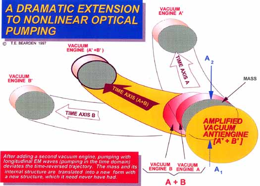

| Subject: RE: Missing Reference
Slide Date: Mon, 9 Jul 2001 11:58:04 -0500  Yes, that is the slide. It works this way: When you time-reverse a cell, you effectively create a major anti-engine for the cell's exact "engine" (exact set of spacetime curvatures at all levels). Because of the precise one-to-one correspondence, this antiengine then "backs the cell up" along the original time-path it took in its physical functioning and changes, back to a precise earlier condition where the disease or disorder was not present. For a cancer cell, e.g., this backs the cell up past where it was originally "promoted" from a stressed or damaged cell to a tumor cell. That makes it into a "damaged cell". The antiengine continues to act, backing it up further into the state before the damage or disorder occurred. That then constitutes "healing" of that cell in a rigorous sense.The cloning methods etc. used, do violence to the cell in the process. At the cellular level, damaging it or any part of it in the process changes the resident spacetime curvature engine set, to include the damage. You then "clone" a cell with an imperfect resident engine. The cloned cell then interacts with a large variety of phenomenology, continually altering various subcomponents of its resident engine by taking on additional subengines or changing some of its former subengines. Somewhere later, that festering "delta" in the resident engine -- after sufficient interactions with other environmentally-induced engines, will undergo interactions that "add" two deltas so something detrimental to the organism. At that point, physical damage to the cell erupts in "anomalous" fashion. Actually it erupts by perfectly normal fashion, once the internal engines and their interactions are understood. This would appear to pose a problem anytime you artificially change the subengines of an organism, as in the case of genetically modified food. The small physical damage associated with splicing the genetics has associated with it the injection of such an artificial engine. The interactions of future environmental engines with the spliced genetic organism or plant then remains to be seen. Not all interactions would appear to happen in the limited test time usually allotted for testing the "effects". Anyway, that was the intention. E.g., Pautrizel demonstrated that immature rats, having immature immune systems, would be restored by the Priore process back to the same immature immune system. The Priore process did not destroy the parasites themselves, but depended upon restoring the immune system back to its first ability to recognize the pathogen and go after it. Priore did not directly "kill" anything! In that case, the pathogens simply re-infected the immature rats, because their immature immune systems could not adequately protect them. It would be the intention of the research, in later generation equipment, to be able to design a specific "extra engine" and introduce it to the pumping, in addition to the "resident engine" in the subject to be treated. That "extra input engine" would accordingly generate a specific "extra antiengine" component in the total antiengine produced. When sufficient research and development maturity has been reached to be able to design such desired "extra engines" to cause the exact, desired extra antiengine to be produced, then the "extra antiengine" technique can be used, e.g., to time-reverse Pautrizel's immature infected rat back to an infected rat with a now-matured immune system. In that case, the rat's stronger immune system would make short work of the pathogen, just as analogously infected mature rats did. To correct birth defects, etc., obviously one would have to change the actual time-path backwards, to a "state" that the body did not have physically, but which its genetics had before the damage. I foresee that eventually, after some years of development, the process would mature until it could regrow severed limbs, or correct dwarfism, etc. Of course that would be fourth or fifth generation, but it is definitely possible, given sufficient development. Cheers, Tom |